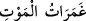

edildi. Onu Fîrûz ed-Deylemî öldürmüştür. Onun katledildiği haberi Efendimiz’e
ulaşınca şöyle buyurmuşlardır: “Firûz kurtuldu.”[139]
Yemâmeli
“Müseylemetü’l-Kezzab”
ise
Hz.
Sıddîk’ın
hilâfeti
esnâsında
katledilmiştir. Onu da Hz. Hamza’nın katili olan Vahşî katletmiştir. Vahşî onu öldürünce:
“Cahiliye döneminde insanların en hayırlısını, müslüman olunca da en şerlisini
öldürdüm.” demiştir.
“Ya da kendisine bir şey vahyedilmemişken” Allah tarafından “Bana da
vahyolundu.” diyenden” daha zâlim kim olabilir? Halbuki ona hiç bir şey
vahyolunmamıştır. Abdullah b. Sa’d bin Ebî Serh böyle diyenlerdendi. Rasûlullah
(s.a.)’in vahiy kâtiplerindendi. “Andolsun biz insanı çamurdan bir süzmeden
yarattık.” anlamındaki âyetinden “Sonra onu bambaşka bir yaratılışla inşâ ettik.”
(Bk. Mü’minûn 23/12-14) âyetine kadar indiği vakit Abdullah, insanın yaratılışındaki
safhalara hayranlığını belirtmek üzere: “Yaratanların en güzeli Allah ne yücedir!”
deyiverdi. Bunun üzerine Rasûlullah (s.a.): “Ey Abdullah, söylediğini aynen yaz, öyle
nâzil olmuştur.” buyurdu. İşte bundan sonra Abdullah’ın gönlüne bir şüphe düştü. Bir
müddet sonra şöyle demeye başladı: “Eğer Muhammed “öyle nâzil oldu” sözünde doğru
ise ona nâzil olduğu gibi bana da nâzil oluyor. Hakikatte ben de onun gibiyim. Eğer
yalan söylüyorsa o takdirde ben de onun söylediği gibi söyledim. O halde ben de
kendime vahy geldiğini iddia etmeliyim.” Böylece İslâm’dan irtidâd etti ve müşriklere
katıldı. Ancak Mekke’nin fethinden sonra tekrar İslâm’a döndü.
“Ve “Ben de Allah’ın indirdiği gibi indireceğim” diyenden daha zâlim kim
olabilir?” Böyle söyleyenler Rasûlullah (s.a.) ile ve onun tebliğ ettiği Kur’an
âyetleriyle alay edenlerdir. Onlara Allah’ın âyetleri okunduğu zaman “İstesek, biz de
bunun gibisini söyleriz.” (Bk. el-Enfâl, 6/31) derlerdi.
“O zâlimler ölüm sarhoşluğu içinde iken onların hâlini bir görsen!” Buradaki hitab,
Rasûlullah (s.a.)’edir. “Zalimler”den maksat, bütün zalimlerdir. Sahte peygamberler ve
diğerleri buna dâhildir. “Zâlimlerin ölümün şiddeti ile boğuşurken çektikleri şiddetli
sıkıntıları ve sekerât-ı mevt anındaki zorlukları görsen çok büyük bir şey görmüş
olursun.
“__WORD__” “Ölüm sarhoşluğu”, ölümün şiddeti ve sekerâtı (sarhoşluğu)
anlamındadır.
“melekler de” ölüm meleği ve azab meleklerinden yardımcıları “ellerini uzatmış”
Onların ruhlarını almak üzere ellerini uzatmıştır. Tıpkı borçluya hiç musamaha
göstermeyen katı alacaklı gibi. Borçlu olan kimseye elini uzatır, isterken kaba davranır
ve borçluya hiç süre tanımaz. “Haydi hemen bana olan borcunu öde. Eğer alacağımı
vermezsen, senin ciğerlerini sökmeden buradan ayrılmam.” gibi laflar eder. O gün azab
melekleri de zalimlere işte bunun gibi davranırlar.
Yahut melekler ellerini azâbla uzatarak onlara; “Haydi canlarınızı çıkarın.” derler.
Yani “Cesedlerinizdeki ruhlarınızı çıkarıp bize verin.” derler. Meleklerin bu sözleri,